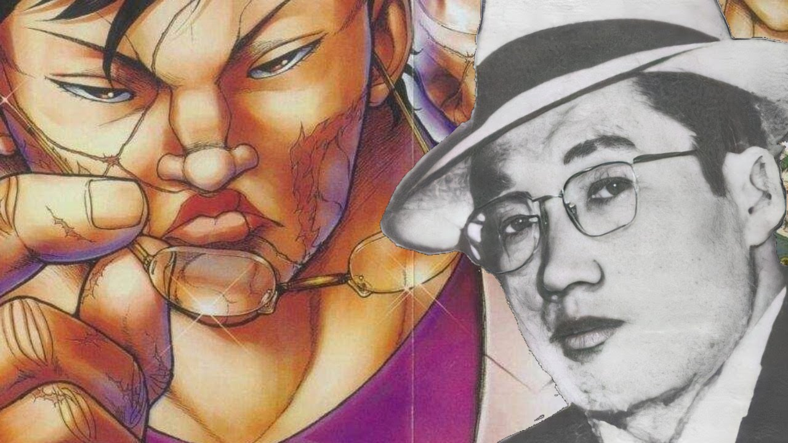

hoje vamos ver algumas curiosidade sobre Kaoru Hanayama,
conhecido como o "Yakuza mais forte", vamos fazer algumas listas
sobre ele, e no final vamos falar um pouco sobre sua historia.
as maiores tecnicas de Hanayama:
força destrutiva: um super soco
aperto monstruoso:
usando sua força de aperto ele aperta e destroi parte de alguma
coisa ou alguem
cabeçada: Kaoru desfere uma cabeçada com
toda a força que tem no pesccompaoço
chute rolante:
Hanyama
rola e no meio do rolamento desfere um chute erguendo sua perna
garra
de ferro: Hanyama agarra a mão esquerda do oponente com sua mão
direita depois o rosto com a mão esquerda e levar o oponente ao
chão esmagando sua cabeça
Os 5 maiores feitos de Hanayama:
força fisica: Hanayama é de longe um dos mais fortes em Baki the
grappler, tendo tido feitos de força como levantar um carro e
quebrar aço com as mãos nuas
resistencia incomparavel: a
resistência de Hanayama é tão grande que ja até aguentou ter sua
mandibula explodida, clarões de luz de uma granada de luz
latador:
Hanayama é um otimo lutador, não fez umamunica aula de lutas,
mas mesmo asssim tem seu proprio estilo de luta e tecnica
dominância:
Kaoru Hanayama com apenas 15 anos ja tinha dominado todo o
submundo do crime, feito que ele guarda até hoje sendo o lider
da mafia japônesa conhecida como "Yakuza"
oponentes mais
fortes: Kaoru ja lutou muitas vezes contra oponentes mais
velhos, experientes e fortes do que ele, e ja acumulou vitorias
inclusive, um bom exemplo é o prisioneiro conhecido como spec
Kei Haganata?

Kei Haganata foi um mafioso japônes dos anos 80, ele era muito
conhecido pôr sua brutalidade e pela cicatriz que tinha no rosto,
ele era muito grande e forte e adivinha só, é identico ao Kaoru
Hanayama. O criador de Baki the grappler não falou nada de ter se
inspirado em Haganata, mas sua semelhança com hanayama é muita, oque
concerteza nos leva a pensar que Hanayama é Kei Haganata do munde de
Baki the grappler